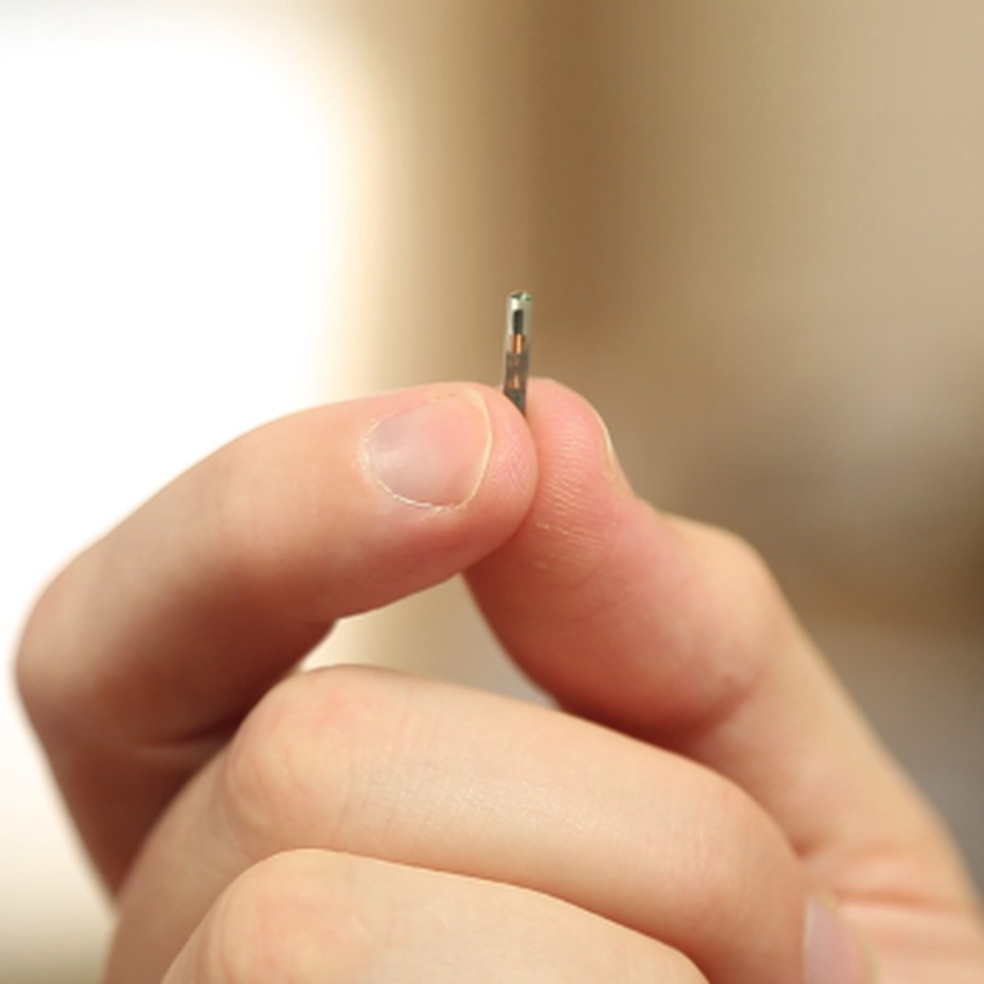
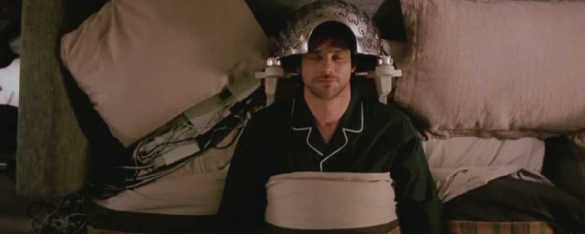

Atualizada em: 29/08/2017
 |
O grupo Quebrando Barreiras, que criou esta ferramenta, foi o grande vencedor do Hack in sampa, maratona hacker que desenvolveu sistemas de combate à corrupção utilizando dados públicos do portal da “transparência” da Câmara e da Prefeitura. |
 |
Novo curso de Administração! A Faculdade Brasil Tecnologia tem orgulho de apresentar o mais novo curso de nossa grade currícular. Administração consiste num punhado de técnicas e Métodos para gerir ou Administrar um projeto, empresa ou até suas compras do mês. |
|  |
Uma empresa de tecnologia de Wisconsin, nos Estados Unidos, causou furor ao anunciar que implantaria chips no corpo de seus funcionários para substituir crachás, chaves e a necessidade de senhas em computadores e equipamentos eletrônicos. |
 |
Tim Bliss, um renomado neurocientista britânico, afirmou durante uma entrevista para o Business Insider UK que, dentro de 10 anos, poderemos deletar memórias ruins de nosso cérebro. Essa é uma idéia um tanto quanto utópica. Algo que lembra "Black Mirror" mas poderá se tornar real em alguns anos. |
 |
Já está no campus Higienópolis o Hackatruck, um veículo com características especiais, onde serão desenvolvidos cursos, palestras e oficinas. Os alunos, para participarem, precisam ter sido aprovados no curso de ensino a distância (EAD) de Conceitos e Fundamentos: Lógica de Programação, Orientação a Objetos e Swift, etapa que aconteceu de 24 de julho até dia 13 de agosto. |
 |
Entre os dias 26 e 30 de julho, aconteceu a 13th International Conference on Diffusion in Solids and Liquids - DSL2017, em Viena, na Áustria. Durante o evento a aluna Carolina Comin Tegon, do Mestrado em Engenharia de Materiais e Nanotecnologia, recebeu o prêmio de “Melhor Apresentação de Pôster”.O evento é um importante espaço que reúne acadêmicos, membros da indústria para trocas de conhecimentos e atua como um importante gerador de insights para lidar com os problemas da atualidade na área. |